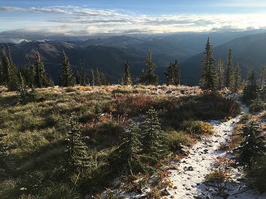

Hiking
I love to hike, especially to new places. I've hiked many miles in the Bob Marshall and Great Bear Wilderness Areas, as well as in New Zealand, Brazil, or even Egypt. I worked on trail crew for five years in the Bob Marshall Wilderness Complex, thus, a lot of my miles in that area stemmed from working for the Forest Service and planning weekend trips in the backcountry.
Over the winter of 2009/2010, I took a four month trip to New Zealand and did a bunch of hikes around the country, hiking from hut to hut, and taking bus rides from trailhead to trailhead. It's a pretty awesome country with a wide variety of scenery and easy to get around! Did you know that if you are under the age of 30 and a US citizen, it is very easy to get a year-long work visa in New Zealand? (What a great opportunity!)
I ended up working on a hydroponic tomato (toe-MAH-toe) farm for six weeks because I was broke and needed to save up some money. I simultaneously "WWOOF-ed" (Willing Workers On Organic Farms, unless they changed the acronym again) at a cafe/bar/orchard for free rent. All in all, it was a good deal. Pretty cool to do some hikes where you have to plan your route timing around the swell of the tide!
I would love to do more hiking in a lot of different places, but particularly through the European Alps sometime. From what I've heard, they have a pretty sweet set-up with chalets along the way. I would imagine it's more expensive than most of the New Zealand options, which vary fairly dramatically, from large equipped huts that you share with 30 people, to tent sites, to free shacks. It depends on whether you're on a highly manicured Great Walk track or simply a run-down track in the middle of nowhere. Nepal would also be a prime destination!
Plenty of opportunities to explore out there!